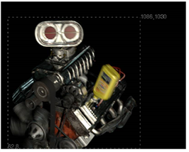
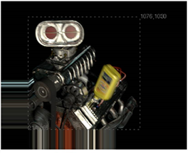

一些 核武器 操作，如合并，可能导致边界框区域的扩展，因为 核武器 不知道额外的区域将是黑色或另一种恒定的颜色。通常，您可以通过将边界框从一个输入复制到结果图像来解决这个问题，从而切断这个额外的区域。为此，可以使用 CopyBBox 节点。
|  |
|
一个输入的边界框
|
| 1。 | 选择 合并 > CopyBBox 在要使用其边界框的节点后插入 CopyBBox 节点。 |
| 2. | 连接要将其边界框复制到 CopyBBox 节点的输入 A 的图像，以及要将边界框复制到输入 B 的图像。 |
核武器 将边界框从输入 A 复制到输入 B。图像 B 中复制的边界框区域之外的任何内容都将被复制到图像的边缘。

|
|